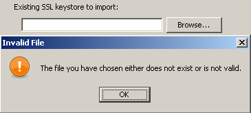
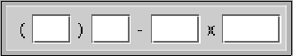
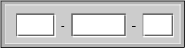

User Input
(by Elmar GROM)
Go back to the documentation index
Contents
- The Basic XML Structure
- Concepts and XML Elements Common to All Fields
- Internationalization
- Panel Title
- Static Text
- Visual Separation
- Text Input
- Radio Buttons
- Combo Box
- Check Box
- Password Field
- File Field
- Multiple File Field
- Directory Field
- Rule Input
- Layout and Input Rules
- Setting Field Content
- The Output Format
- Validating Field Content
- Processing the Field Content
- Summary Example
- Search
- Specification
- Example
Most of the panels that come with IzPack take user input in some form. In some panels this is through a simple user acknowledgment in others the user can enter text or select a directory through a file open dialog. In all of those cases the user input is used for the specific purpose needed by the panel that takes the input. However, if you need user input during installation that will later on be available to your application then you need to use the user input panel.
To use this panel, list it in the install file with the class name UserInputPanel. In addition, you must write a XML specification and add it to the install resources. The name of this resource must be userInputSpec.xml.
A UserInputPanel can be highly dynamic from IzPack 4.3 on, as it will be refreshed every time the user input changes and will be rendered based on conditions. Thus it would be possible to enable or disable some more options by clicking a checkbox.
Here's an example userInputSpec.xml showing 3 panels. There are some advanced features in this example, but the general flow should be looked at first.
The user input panel is a blank panel that can be populated with UI elements through a XML specification file. The specification supports text labels, input elements, explanatory text and some minor formatting options.
The following types of user input elements are supported:
- Text
- Combo Box
- Radio Buttons
- Check Box
- Password
- File
- Multiple files
- Directory
- Rule Input Field
- Search Field
Additionally visual elements can be added using the following types:
- Static Text
- Title
- Space
- Divider
The way in which this panel conveys the user input to your application is through the variable substitution system. User input is not directly inserted into your configuration files but the variables that you specify for this panel are set in the variable substitution system. After this operation has taken place the variables and associated values are available for all substitutions made. This way of operation has a number of implications that you should be aware of.
First, not only can you set additional variables in this way but you can also modify variables that are defined elsewhere -even built in variables. For this reason you should be careful to avoid overlaps when choosing variable names. Although there might be cases when it seems useful to modify the value of other variables, it is generally not a good idea to do so. Because you might not exactly know when other variables are set and when and where they are used throughout the installation process, there might be unintended side effects.
Second, the panel must be shown at a point during the installation process before the variables are used. In most cases you will use the values to substitute variables in launch and configuration files that you supply with your installation. For this to work you place this panel before the install panel, because the install panel uses the variable substitutor to replace all such variables. Although using this panel any later in the process will correctly set the variables internally, there won't be any affect on the files written to disk. You can also use variables set in this way in other panels that you have written yourself. There is a section in the chapter on writing your own panel that explains how to do this. Also in this case it is important to place the associated input panel in the process before the variables are used.
At this point I would also like to mention that it is possible to hide every field element based on conditions.
It would also be possible to hide select elements on the panel or the panel altogether if certain packs are not selected. For this to work you must place this panel after the packs panel. One side effect of using this feature is that it is not possible to step back once the user input panel is displayed. This is because the user might make changes in the packs selection that would require a complete rebuild of the UI. Unfortunately, building the UI is an irreversible process, therefore the user can not be allowed to go back to the packs panel.
The Basic XML Structure
The top level XML section is called <userInput>. For most panels it does not make sense to present them more than once, however you might want to present multiple user input panels -with different content of course. Therefore the <userInput> section can contain multiple tags that each specify the details for one panel instance. The tag name for this is <panel>.
The <panel> tag uses the following attributes:
order - required
This is the order number of the user input panel for which this specification should be used. Counting starts at 0 and increments by 1 for each instance of the user input panel. So if a spec should be used for the second occurrence of the user input panel use order="1".
layout - optional
There are three general layout rules this panel uses, they are left, center and right. While i think left is most commonly used, you might want to experiment with this attribute and see which you like best. The default is left.
Concepts and XML Elements Common to All Fields
Before we dive into the details of defining the various UI elements I would like to present XML elements and general concepts that apply throughout. This saves me a lot of work in writing and you a lot of repetitive reading and maybe a tree or two.
The UI elements are generally laid out top to bottom in the order they appear in the XML file. The only exception to this rule is the title, which always appears at the very top. The layout pattern for the input fields is as follows: If a description is defined, it appears first, using the full available layout width. The input field is placed beneath the description. With fields such as the text field or the combo box, the label is placed to the left and the input field to the right. Fields such as radio buttons and check boxes are somewhat indented and have the label text appear to their right.
Each UI element is specified with a <field> tag. The type attribute is used to specify what kind of field you want to place. Obviously, the type attribute is not optional.
Each field that takes user input must also specify the variable that should be substituted. This is done with the variable attribute.
Almost all fields allow a description. When a description is allowed it is always added in the same way. The description is part of the data within the field tag. There can only be one description per field. If you add more than one, the first one is used and the others ignored. There are three attributes used with this tag. The text is specified through the txt or the id attribute. The details on using them are described below. The attributes are all optional but you must specify text to use, either directly or through the id attribute. In addition, you can set the text justification to left, center and right with the align attribute.
The following example illustrates the general pattern for field specification:
<field type="text" variable="myFirstVariable"> <description align="left" txt="A description" id="description1"/> . . . </field>
A very frequently used pattern is for the definition of text. Where ever text is needed (labels, descriptions, static text, choices etc.) it can be specified in place using the txt attribute. This is convenient if you are only supporting a single language. However, if you would like to separate your text definitions from the panel specification or if you need to support multiple languages you might want to use the id attribute instead to only specify an identifier. You can then add multiple XML files with the same name as this spec file (userInputSpec.xml) appended with an underscore '_' and the the appropriate three letter ISO3 language code. The content of those files must conform to the specification for IzPack language packages. For more details on this topic see the chapter on language packages under advanced features. id defines an identifier that is also defined in the language package, together with the localized text to use. It is possible to use both the txt and the id attribute. In this case the text from the language package is used. If for some reason the language package is not available or the id is not defined there, the text specified with txt is used as default.
All input fields can be pre-set with a value of your choice. Although the details vary a bit from field type to field type, the set attribute is always used to accomplish this. The set attribute is of course optional. Please note that if you use the set attribute, you would have to keep in mind, that the UserInputPanel will be rendered after each user input. Thus it will be set back to the default value if you don't use a condition to handle that. IzPack generates builtin conditions for every variable used as target for a field to be able to check if there's any input.
All fields that take user input use a <spec> tag to define the details of the input field. In the some cases the content of this tag is rather simple. Input fields with a more complex nature tend to have accordingly complex content in this tag. Since the details vary widely, they are explained with each input field.
Any number of <createForPack name=''a pack name'' /> tags can be added to the <panel> and <field> sections. This tag has only one attribute and no data. The attribute is name and specifies the name of one of the installation packs that you have defined. Here is how it works: if no <createForPack ...> tag exists in a section, the entity is always created. However, if the tag exists, the entity is only created if one or more of the listed packs are selected for installation. As mentioned before, if you are using this feature, make sure the user input panel shows up after the packs panel.
Also, any number of <createForUnselectedPack name=''a pack name'' /> tags can be added to the <panel> and <field> sections. This tag has only one attribute and no data. It works exactly like createForPack except that once added user input panel will appear for only NOT Selected packs. As mentioned earlier, you need to make sure that the user input panel shows up after the packs panel for this feature to work.
There is a possibility to use variables in those elements where the text is supplied via txt attribute. This includes static fields and input fields (spec, description). The text can contain unlimited number of variables that will be substituted. Variable substitution also works with language packs, just use variables in your language pack, and they will be still substituted properly.
Example
In the following example, the variables: name1, name2, name3 will be substituted.
<field type="text" variable="value1"> <description align="left" txt="Configuration for $name1 and $name2" id=""/> <spec txt="The value for $name3:" id="" size="20" set="default value" /> </field>
Internationalization
To provide internationalization you can create a file named userInputLang.xml_xyz where xyz is the ISO3 code of the language in lowercase. Please be aware that case is significant. This file has to be inserted in the resources section of install.xml with the id and src attributes set at the name of the file.
Example:
If you have the following userInputSpec.xml and you want to internationalize input.comment, input.proxy, input.port for English and French you have to create two files named userInputLang.xml_eng and userInputLang.xml_fra:
<userInput>
<panel order="0">
<field type="staticText" align="left" txt="My comment is here."
id="input.comment"/>
<field type="text" variable="proxyaddress">
<spec txt="Proxy Host:" id="input.proxy" size="25"
set=""/>
</field>
<field type="text" variable="proxyPort">
<spec txt="Proxy Port:" id="input.port" size="6"
set=""/>
</field>
</panel>
</userInput>
userInputLang.xml_eng file contains:
<langpack> <str id="input.comment" txt="English:My comment is here."/> <str id="input.proxy" txt="English:Proxy Host:"/> <str id="input.port" txt="English:Proxy Port:"/> </langpack>
userInputLang.xml_fra file contains:
<langpack> <str id="input.comment" txt="French:My comment is here."/> <str id="input.proxy" txt="French:Proxy Host:"/> <str id="input.port" txt="French:Proxy Port:"/> </langpack>
you will also have to add the following to the install.xml file
<resources> ... <res id="userInputSpec.xml" src="userInputSpec.xml"/> <res id="userInputLang.xml_eng" src="userInputLang.xml_eng" /> <res id="userInputLang.xml_fra" src="userInputLang.xml_fra" /> ... </resources>
Panel Title
You can place an optional title at the top of the panel. Though it is not possible to select a font for the title that is different form the one used on the rest of the panel, it is possible to modify the font to some extent. To specify the title create a <field> tag and use the type attribute with the value title. In addition to the txt and id attributes, the following attributes are supported:
italic - optional
With a value of true specifies that the title font should be in italics.
bold - optional
With a value of true specifies that the title font should be bold.
size - optional
This attribute specifies the size of the title font. Please note that the size is not specified in points but as a relative size multiplier compared to the body font on the panel. The default value is 2.
Static Text
Static text is simply text that is placed on the panel without direct connection to any of the input elements. It is laid out to use the entire layout width available on the panel and is broken into multiple lines if necessary. To specify static text create a <field> tag and use the type attribute with a value of staticText. In addition to the `` txt`` and id attributes, the text can be justified left, center or right with the align attribute. It is not possible to format this text in any way. You can also use variables in the text (as it was mentioned above), they will be substituted with variable's value.
Example
The following example inserts some static text in the panel.
<field type="staticText" align="left"
txt="This is just some simple static text with variable substitution in here: $myvariable."
id="staticText.text"/>
Visual Separation
Sometimes it is desirable to separate different entities visually. This can be accomplished by inserting a space or a divider. A space simply inserts a vertical separation of the average height of a single line entity, such as a line of text or a an input field. A divider inserts the same amount of space but also draws a division line which can be either aligned at the top or bottom of the separation.
<field type="divider" /> <field type="space" />
Text Input
A text input field allows the user to enter and edit a single line of text, without length restriction. The input field can have a label, which will show to the left of the input field and a description, which can span multiple lines. The description is placed above the input field and uses the entire available layout width. The width of the input field must be explicitly set, otherwise it will only accommodate a single character. To specify a text input field create a <field> tag and use the type attribute with a value of text. The txt and id attributes are not supported here. The variable attribute specifies the variable that should be replaced with the text taken from the input field.
The Data
The data consists of two items, a description and the spec. The <spec> tag uses four attributes. The label text is specified with txt and/or id as described above. In addition, the width of the input field as it appears on the panel can be set with the size attribute. The value must be an integer and sets the field width based on the average character width of the active font. If this is not specified, then you will end up with a very narrow field that is practically unusable.
The fourth attribute set is optional. It takes a text string to pre-fill the input field.
Example
The following example creates a text input field with a label and description. The width of the input field will be enough to accommodate 15 characters. The field will be pre-set with the text 'some text' when the UI is first presented.
<field type="text" variable="textInput">
<description align="left" txt="A description for a text input field"
id="description.text"/>
<spec txt="Enter some text:" id="text.label" size="15" set="some text"/>
</field>
Radio Buttons
The radio buttons are useful when the user needs to select a specific option out of a pre-defined list of choices. This field offers an arbitrary number of mutually exclusive buttons, each with its own label. The placement of the buttons and labels is different form other fields. First, the button is placed to the left and the label text to the right. Second, the buttons are not lined up all the way to the left as other labels are but they are indented from that location. As with other fields, the description is placed above the list of radio buttons and uses the entire available layout width. To specify a set of radio buttons create a <field> tag and use the type attribute with a value of radio. The txt and `` id`` attributes are not supported here. As with all other input fields, the variable attribute specifies that variable that should be replaced with the user selection.
The Data
The data consists of two items, a description and the spec. The <spec> tag has no attributes, instead the specification details are entered as data within the `` <spec>`` tag. The <spec> data consists of one or more <choice> tags. One <choice> tag is required for each radio button. The `` <choice>`` tag accepts the usual txt and id attributes, which are used to specify the label text. In addition the following attributes are supported:
value - required
The value attribute is used to specify which value to insert if this associated radio button is selected. In other words, the label text has nothing to do with the value that is actually substituted for the variable. For this reason there is never an issue if multiple languages are used, the value is always the same for a given selection.
set - optional
The set attribute accepts the values true and false. Since the attribute is optional it can also be omitted, which is interpreted as false. If a value of true is used, the associated radio button will be selected when the UI is first presented. Obviously, only one of the buttons in a set should be set to true.
Example
The following example creates a set of four radio buttons with description. The second button will be selected when the UI is first presented.
<field type="radio" variable="radioSelection">
<description align="left" txt="This is a description for radio buttons"
id="description.radio"/>
<spec>
<choice txt="the first choice" id="radio.label.1" value="1 selected" />
<choice txt="the second choice" id="radio.label.2" value="2 selected" set="true" />
<choice txt="the third choice" id="radio.label.3" value="3 selected" />
<choice txt="the fourth choice" id="radio.label.4" value="4 selected" />
</spec>
</field>
Combo Box
The combo box provides essentially the same functionality as do the radio buttons, just in a different presentation stile. The advantage of the combo box is that it is easier to deal with a long list of choices.
Check Box
If there are a number of choices and any combination of them could be selected, not just a single one, then radio buttons are not the way to go. You might be better off using a number of check boxes. The layout for a check box works in the same way as for radio buttons. The check box is placed indented from the left most edge and the label text is placed to the right of it. Other than with radio buttons, you cannot define any number of check boxes. This field allows the definition of only one check box, which is associated with one variable. If you need multiple check boxes you need to define one field for each of them. To make it look like a cohesive group you simply provide a description only for the first check box. All of the check boxes will be positioned in such a way that they look like a group, even though they are separate entities and their selections are conveyed to different variables. The description is placed above the check box and uses the entire available layout width. To specify a check box create a <field> tag and use the type attribute with a value of check. As with all other input fields, the variable attribute specifies the variable that should be replaced with the user input.
The Data
The data consists of two items, a description and the spec. The <spec> tag accepts the usual txt and id attributes, which are used to specify the label text. In addition, the following attributes are supported:
true - required
The true attribute specifies the value to use for substitution when the box is selected.
false - required
The false attribute specifies the value to use for substitution when the box is not selected.
set - optional
The set attribute accepts the values true and false. Since the attribute is optional it can also be omitted, which is interpreted as false. If a value of true is used, the check box will be selected when the UI is first presented.
Example
The following example creates a check box with description. The check box will not be selected when the UI is first presented. This could also be accomplished by omitting the set attribute.
<field type="check" variable="checkSelection.1">
<description align="left" txt="This is a description for a check box"
id="description.check.1"/>
<spec txt="check box 1" id="check.label.1" true="on" false="off"
set="false"/>
</field>
Password Field
The password field allows masked user input to accept password values. Normally, a spec is created with 2 'pwd' elements to allow equality validation (below) and ensure the user typed the password correctly. The password field also allows multiple validators (see below). This is a very powerful feature for chaining validation operations based on user input. See the PasswordKeystoreValidator for an example.
<field type="password" align="left" variable="the.password">
<spec>
<pwd txt="The Password:" size="25" set=""/>
<pwd txt="Retype Password:" size="25" set=""/>
</spec>
</field>
File Field
This field allows the user to select a file from the file system. Text can be added before the selection or a static text element can be added to display above the selection box (a little more visually appealing).
<field type="file" align="left" variable="the.file"> <spec txt="" size="25" set=""/> </field>
<field type="staticText" align="left" txt="Existing SSL keystore to import:"/> <field type="file" align="left" variable="existing.ssl.keystore"> <spec txt="" size="25" set="$myconfig" /> </field>

Pressing 'Next' without a file selected show the following message:
Messages for the file field can be customized by creating a custom lang pack and overriding the following values (attribute values wrapped for readability):
<str id="UserInputPanel.file.nofile.message" txt="You must select a valid file."/>
<str id="UserInputPanel.file.nofile.caption" txt="No File Selected"/>
<str id="UserInputPanel.file.notfile.message" txt="The file you have chosen either
does not exist or is not valid."/>
<str id="UserInputPanel.file.notfile.caption" txt="Invalid File"/>
Note: Mixing file fields with other fields that have text in front of them can lead to formatting (layout) issues. Placing these types of elements on different panels can provide a much better user experience.
Multiple File Field
This field allows the user to select multiple files from the file system. Text can be added before the selection or a static text element can be added to display above the selection box (a little more visually appealing).
The files in the list can be created as a semi-colon separated string in one varibale. It's also possible to let the input field create multiple variables with the given variable appended with indexes. E.g. specifying a variable with name the.file and three files selected in the box would lead to three variables in the installer (the.file, the.file_1, the.file_2).
Set-Parameter :
visibleRows How many rows shall be shown in the list box.
prefX The preferred width of the list box. The default is 200.
prefY The preferred height of the list box. The default is 100.
fileext The file extension to search for. This will be used in the FileChooserDialog.
fileextdesc The description of the file extension. This will be used in the FileChooserDialog.
multipleVariables If set to true, multiple variables will be created. Each file will get one variable.
allowEmptyValue If set to true, no file has to be selected and the box can be left empty.
<field type="multifile" align="left" variable="the.file"> <spec txt="" size="25" set=""/> </field>
<field type="staticText" align="left" txt="Existing SSL keystore to import:"/> <field type="file" align="left" variable="existing.ssl.keystore"> <spec txt="" size="25" set=""/> </field>
Messages for the file field can be customized by creating a custom lang pack and overriding the following values (attribute values wrapped for readability):
<str id="UserInputPanel.file.nofile.message" txt="You must select a valid file."/>
<str id="UserInputPanel.file.nofile.caption" txt="No File Selected"/>
<str id="UserInputPanel.file.notfile.message" txt="The file you have chosen either
does not exist or is not valid."/>
<str id="UserInputPanel.file.notfile.caption" txt="Invalid File"/>
Note: Mixing multiple file fields with other fields that have text in front of them can lead to formatting (layout) issues. Placing these types of elements on different panels can provide a much better user experience.
Directory Field
The directory field is essentially the same as the file field except the field will ensure a directory is selected.
<field type="dir" align="left" variable="existing.jboss.home">
<spec txt="" size="25" set="$INSTALL_PATH$FILE_SEPARATOR${jboss.version}" mustExist="false" />
</field>
The directory supports the following two special attributes for the <spec> element:
mustExist - optional (default: true) Specifies whether or not the selected path must be an existing directory.
create - optional (default: false) Specifies whether or not the selected directory should be created if it does not exist (requires mustExist=true).
Messages for the directory field can be customized by creating a custom lang pack and overriding the following values (attribute values wrapped for readability):
<str id="UserInputPanel.dir.nodirectory.message" txt="You must select a valid directory."/>
<str id="UserInputPanel.dir.nodirectory.caption" txt="No Directory Selected"/>
<str id="UserInputPanel.dir.notdirectory.message" txt="The directory you have chosen
either does not exist or is not valid."/>
<str id="UserInputPanel.dir.notdirectory.caption" txt="Invalid Directory"/>
Note: Mixing directory fields with other fields that have text in front of them can lead to formatting (layout) issues. Placing these types of elements on different panels can provide a much better user experience.
Rule Input
The rule input field is the most powerful and complex one of all the input fields offered by this panel. In its most simple incarnation it looks and works like a regular text input field. There is also only an incremental increase of the complexity in the specification for this case. However, it is unlikely that you would use it for such a purpose. The real power of this input field comes from the fact that rules can be applied to it that control many aspects of its look as well as overt and covert operation.
Layout and Input Rules
The basic nature of this input field is that of a text input field and as mentioned before, in its most simple incarnation that is what it looks like and how it operates. However, the layout of the field can be defined in such a way that there are multiple logically interconnected text input fields, adorned with multiple labels. Further more, each of these fields can be instructed to restrict the type of input that will be accepted. Now you might ask what this could be useful for. As an answer, let me present a few examples that show how this feature can be used. Before i do this however, i would like to describe the specification syntax, so that the examples can be presented together with the specifications that make them work in a meaningful way.
The actual specification of the layout, the labels and the type of input each field accepts all happens in a single string with the layout attribute. First let us have a look at the specification format for a single field. This format consists of a triplet of information, separated by two colons ':'. A typical field spec would look like this: N:4:4, where the first item is a key that specifies the type of input this particular field will accept - numeric input in the example. The second item is an integer number that specifies the physical width of the field, this is the same as in the with of any regular text field. Therefore the field in the example will provide space to display four characters. The third item specifies the editing length of the string or in other words, the maximum length of the string that will be accepted by the field. In the layout string you can list as may fields as you need, each with its own set of limitations. In addition you can add text at the front, the end and in between the fields. The various entities must be separated by white space. The behavior of this field is such that when the editing length of a field has been reached, the cursor automatically moves on to the next field. Also, when the backspace key is used to delete characters and the beginning of a field has been reached, the cursor automatically moves on to the previous field. So let us have a look a some examples.
Phone Number
The following specification will produce a pre formatted input field to accept a US phone number with in-house extension. Even though the pattern is formatted into number groups as customary, complete with parentheses '(' and dash '-', entering the number is as simple as typing all the digits. There is no need to advance using the tab key or to enter formatting characters. Because the fields only allow numeric entry, there is a much reduced chance for entering erroneous information. "( N:3:3 ) N:3:3 - N:4:4 x N:5:5". Each of the fields uses the 'N' key, indicating that only numerals will be accepted. Also, each of the fields only accepts strings of the same length as the physical width of the field.
E-Mail address
This specification creates a pattern that is useful for entering an e-mail address "AN:15:U @ AN:10:40 . A:4:4". Even though the first field is only fifteen characters wide it will accept a string of unlimited length, because the 'U' identifier is used for the edit length. The second field is a bit more restrictive by only accepting a string up to forty characters long.

IP address
It might not be uncommon to require entering of an IP address. The following simple specification will produce the necessary input field. All fields are the same, allowing just three digits of numerical entry. "N:3:3 . N:3:3 . N:3:3 . N:3:3"

Serial Number or Key Code
If you ship your product with a CD key code or serial number and require this information for registration, you might want to ask the customer to transcribe that number from the CD label, so that it is later on accessible to your application. As this is always an error prone operation, the predefined pattern with the easy editing support and restriction of accepted data helps to reduce transcription errors "H:4:4 - N:6:6 - N:3:3". This particular specification will produce three fields, the first accepting four hexadecimal, the second six numerical and the third three numerical digits.
Limitations
Even though the above examples all use single character labels between fields, there is no restriction on the length of these labels. In addition, it is possible to place label text in front of the first field and after the last field and the text can even contain spaces. The only limitation in this regard is the fact that all white space in the text will be reduced to a single space on the display. This means that it is not possible to use multiple spaces or tabs in the text.
The following table lists and describes all the keys that can be used in the specification string.
| Key | Meaning | Description |
|---|---|---|
| N | numeric | The field will accept only numerals. |
| H | hexadecimal | The field will accept only hexadecimal numerals, that is all numbers from 0-F. |
| A | alphabetic | The field will accept only alphabetic characters. Numerals and punctuation marks will not be accepted. |
| AN | alpha-numeric | The field will accept alphabetic characters and numerals but no punctuation marks. |
| O | open | The filed will accept any input, without restriction. |
| U | unlimited | This key is only legal for specifying the editing length of a fields. If used, the field imposes no length restriction on the text entered. |
Setting Field Content
Like all other input fields the rule input field can also be pre-filled with data and as usual, this is accomplished thought the set attribute. As you might expect, the details of setting this field are rather on the complicated side. In fact you can set each sub field individually and you can leave some of the fields blank in the process. The set specification for all sub fields is given in a single string. Each field is addressed by its index number, with the count starting at 0. The index is followed by a colon ':' and then by the content of the field. The string "0:1234 1:af415 3:awer" would fill the first subfield with 1234, the second one with af415 and the fourth with awer. The third subfield would stay blank and so would any additional fields that might follow.
The individual field specs must be separated with spaces. Spaces within the pre-fill values are not allowed, otherwise the result is undefined.
The Output Format
The user input from all subfields is combined into one single value and used to replace the variable associated with the field. You can make a number of choices when it comes to the way how the subfield content is combined. This is done with the resultFormat and separator attributes. The resultFormat attribute can take the following values:
| Value | Meaning |
|---|---|
| plainString | The content of all subfields is simply concatenated into one long string. |
| displayFormat | The content of all subfields and all labels (as displayed) is concatenated into one long string. |
| specialSeparator | The content of all subfields is concatenated into one string, using the string specified with the separator attribute to separate the content of the subfields. |
| processed | The content is processed by Java code that you supply before replacing the variable. How to do this is described below. |
Validating Field Content
You can provide runtime validation for user input into a text field and rule field via the validator element (which is a child of the field element. There are two types of built-in validators already provided: a NotEmptyValidator and a RegularExpressionValidator. You can also easily create your own validator. In all cases, if the chosen validator returns false, a messagebox will display the contents of the txt attribute and the user will be unable to continue to the next panel.
You can specify a processor for a combobox:
<choice processor="fully.qualified.class.name"
set="selectedValue"/>
so that you can fill a combobox with data on a simple way.
NotEmptyValidator
The NotEmptyValidator simply checks that the user entered a non-null value into each subfield, and returns false otherwise.
RegularExpressionValidator
The RegularExpressionValidator checks that the user entered a value which matches a specified regular expression, as accepted by the Jakarta Regexp library (http://jakarta.apache.org/regexp/). The syntax of this implementation is described in the javadoc of the RE class (http://jakarta.apache.org/regexp/apidocs/org/apache/regexp/RE.html).
You can specify the regular expression to be tested by passing a parameter with a name of pattern to the validator (via the param element), with the regular expression as the value attribute. For example, the following would validate an e-mail address:
The example of using Regexp validator in rule input field:
<field type="rule" variable="EMAILaddress">
<spec
txt="Your Email address:" layout="O:12:U @ O:8:40 .
A:4:4"
set="0: 1:domain 2:com" resultFormat="displayFormat"
/>
<validator
class="com.izforge.izpack.util.RegularExpressionValidator"
txt="Invalid email address!">
<param
name="pattern"
value="[a-zA-Z0-9._-]{3,}@[a-zA-Z0-9._-]+([.][a-zA-Z0
-9_-]+)*[.][a-zA-Z0-9._-]{2,4}"
/>
</validator>
</field>
The example of using Regexp validator in text input field:
<field type="text" variable="EMAILaddress">
<spec
txt="Your Email address:" set="you@domain.com" size="20" id=""
/>
<validator
class="com.izforge.izpack.util.RegularExpressionValidator"
txt="Invalid email address!">
<param
name="pattern"
value="[a-zA-Z0-9._-]{3,}@[a-zA-Z0-9._-]+([.][a-zA-Z0
-9_-]+)*[.][a-zA-Z0-9._-]{2,4}"
/>
</validator>
</field>
An example of using regexp validator in a password field (attribute text wrapped for readability):
<field type="password" align="left" variable="db.password">
<spec>
<pwd txt="DB Password:" size="25" set=""/>
<pwd txt="Retype Password:" size="25" set=""/>
</spec>
<validator class="com.izforge.izpack.util.PasswordEqualityValidator"
txt="Both DB passwords must match." id="key for the error text"/>
<validator class="com.izforge.izpack.util.RegularExpressionValidator"
txt="Service password must begin with a character and be 8-20
mixed-case characters, numbers, and special characters [#@!$_]."
id="key for the error text">
<param name="pattern" value="^(?=[a-zA-Z])(?=.*[0-9])(?=.*[#@!$_])
(?=.*[A-Z])(?=.*[a-z])(?!.*[^a-zA-Z0-9#@!$_])(?!.*\s).{8,20}$"/>
</validator>
</field>
You can test your own regular expressions using the handy applet at http://jakarta.apache.org/regexp/applet.html.
PasswordEqualityValidator
This validator uses a password field specification to compare the values in each field for equality. Normally, this would be to ensure a password was typed correctly before any other validation takes place.
<field type="password" align="left" variable="the.password">
<spec>
<pwd txt="The Password:" size="25" set=""/>
<pwd txt="Retype Password:" size="25" set=""/>
</spec>
<validator class="com.izforge.izpack.util.PasswordEqualityValidator"
txt="Both passwords must match." id="lang pack key for the error text"/>
</field>
PasswordKeystoreValidator
This validator uses the password field and parameters you send in from previous user input or predefined properties to open a keystore and optionally try to get a specified key.
You must specify the parameter 'keystoreFile', and optionally 'keystoreType' (defaults to JKS), 'keystoreAlias' (to check for existence of a key), and 'aliasPassword' (for trying to retrieve the key).
An additional parameter 'skipValidation' can be set to 'true' in a checkbox and allow the validator framework to run, but not actually do the validation.
Optionally checking the key password of multiple keys within a keystore requires the keystore password (if different from the key password) be set in the 'keystorePassword' parameter.
<field type="password" align="left" variable="keystore.password">
<spec>
<pwd txt="Keystore Password:" size="25" set=""/>
<pwd txt="Retype Password:" size="25" set=""/>
</spec>
<validator class="com.izforge.izpack.util.PasswordEqualityValidator"
txt="Both keystore passwords must match." id="key for the error text"/>
<validator class="com.izforge.izpack.util.PasswordKeystoreValidator"
txt="Could not validate keystore with password and alias provided." id="key for the error text">
<param name="keystoreFile" value="${ssl.keystore}"/>
<param name="keystoreType" value="${ssl.keystore.type}"/>
<param name="keystoreAlias" value="${keystore.key.alias}"/>
<param name="skipValidation" value="${skip.keystore.validation}"/>
</validator>
</field>
Creation Your Own Custom Validator
You can create your own custom Validator implementation simply by creating a new class which implements the com.izforge.izpack.panels.Validator interface. This interface specifies a single method: validate(ProcessingClient client) , which returns a boolean value. You can retrieve the value entered by the user by casting the input ProcessingClient as a RuleInputField and calling the RuleInputField.getText() method. You can also retrieve any parameters to your custom Validator by calling the RuleInputField.getValidatorParams() which returns a java.util.Map object containing parameter names mapped to parameter values. For an example, take a look at com.izforge.izpack.util.RegularExpressionValidator.
Set values in the RuleInputField can be preprocessed. At now you can specify a processor class to pre process a value to be set at initial value of a RuleInputField. Syntax:
<spec set="0:defaultVal:classname" .../>
The class name is an optional value. The class must implement the Processor interface.
Processing the Field Content
This feature needs to be documented.
Summary Example
<field type="rule" variable="test1">
<description align="left" txt="A description for a rule input
field."
id="description.rule.1"/>
<spec txt="Please enter your phone number:"
layout="( N:3:3 ) N:3:3 - N:4:4 x N:5:5"
resultFormat="specialSeparator" separator="."/>
<validator class="com.izforge.izpack.util.NotEmptyValidator"
txt="The phone number is mandatory!" />
<!--processor class=""/-->
</field>
Search
The search input field allows the user to choose the location of files or directories. It also supports auto-detection of the location using a list of suggestions. The field is basically a combobox with an extra button to trigger auto-detection (again).

Specification
The <description> tag is the same as with other fields
The <spec> tag supports the following attributes:
- filename - the name of the file or directory to search for
- type - what to search for
- file - search for a file
- directory - search for a directory
- result - what to return as the search result
- file - result of search is whole pathname of file or directory found
- directory - only return directory where the file was found (this is the same as file when searching for directories)
- parentdir - return the full path of the parent directory where the file was found
- checkfilename - the name of a file or directory to check for existence (this can be used to validate the user's selection)
Example
<field type="search" variable="java_sdk_home">
<description align="left"
txt="This is a description for a search
input field."
id="description.java_sdk_home"/>
<spec txt="Path to Java SDK:" checkfilename="lib/tools.jar"
type="file" result="directory">
<choice value="/usr/lib/java/" os="unix" />
<choice value="/opt/java" os="unix" />
<choice value="C:\Program Files\Java" os="windows" />
<choice value="C:\Java" os="windows" />
</spec>
</field>